My Favorite Places to Visit in Northern California
Having lived in Northern California my whole life, I grew to love traveling to different towns and appreciate the beauty of towns and outdoor scenery not too far from home. The pandemic especially allowed me to be surrounded and feel grounded by nature. On this page, you will find some of my recommended photo-worthy spots, walkable places, and desinations to stay overnight.
Photo-Worthy Spots
The Northern California coast is one of the most picturesque places I have ever been to. When a friend asks for recommendations on places to visit that are also great for those spontaneous photoshoots, I always suggest them to check out Big Sur along Highway 1, Capitola Village, and the Painted Ladies in San Francisco. For those willing to take a longer drive to catch amazing views, Big Sur is a must-stop. Capitola village is a family and dog-friendly town sprinkled with cute galleries and coffee shops. The Painted Ladies are a row of Victorian-style houses that resemble the period of the California Gold Rush.
 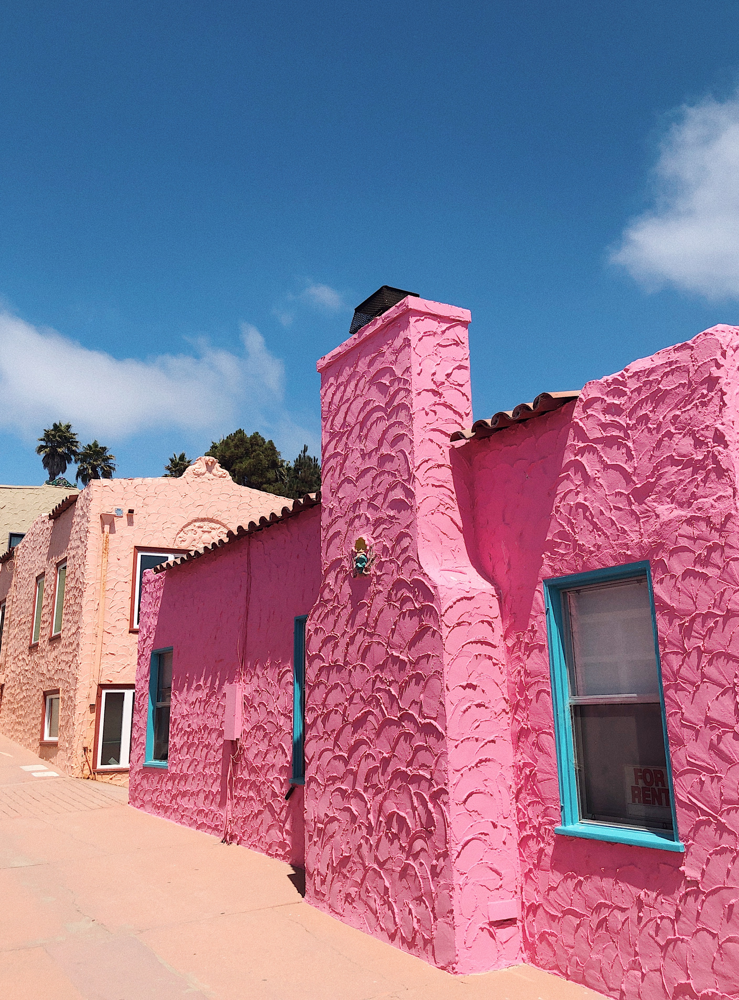
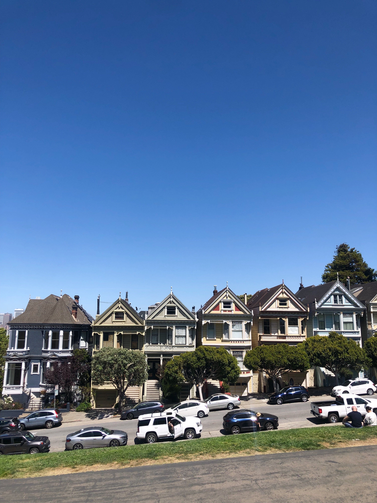
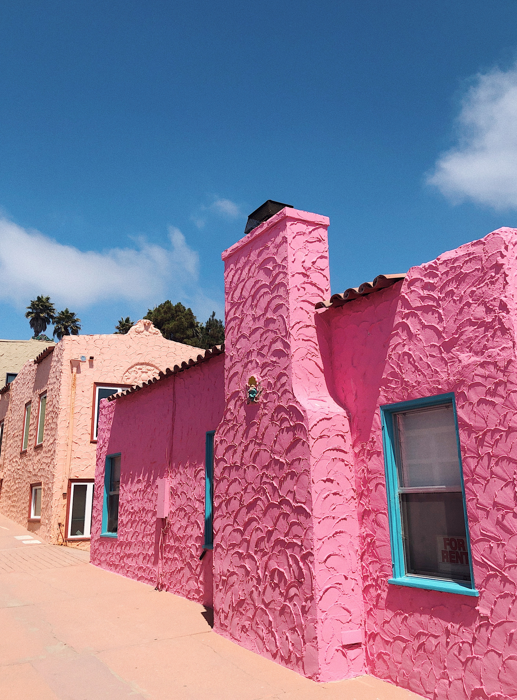
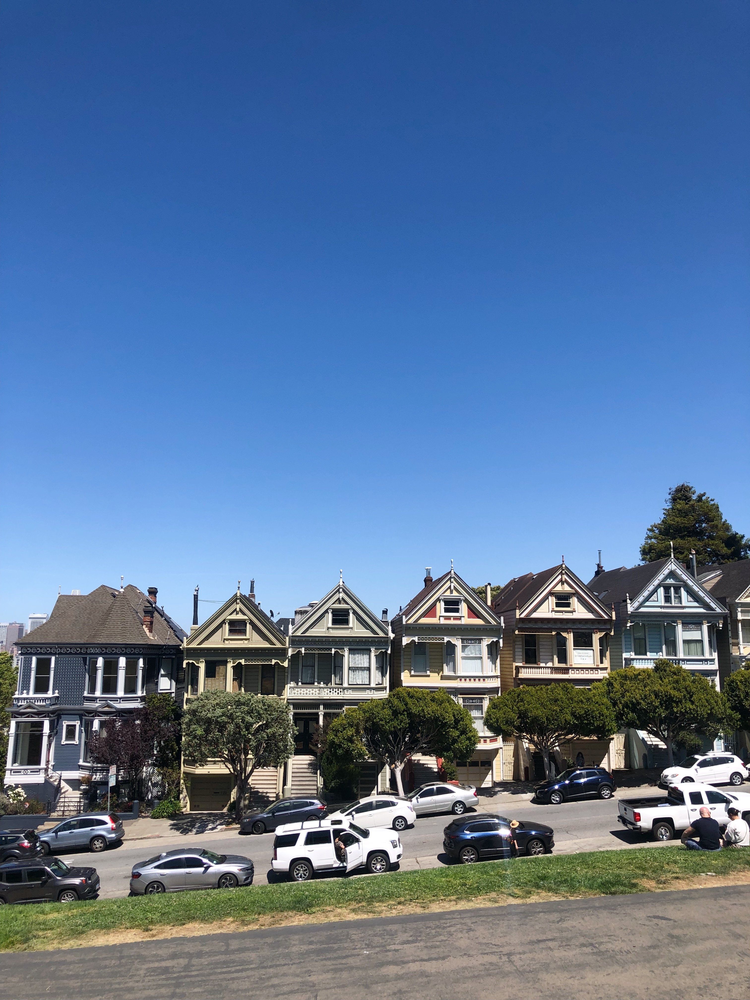
Walkable Places
If you're wanting to get your steps in for the day, look no further. Just outside of the San Francisco Bay Area is Henry Cowell State Park, home to many hiking trails and the Garden of Eden swimming hole surrounded by redwood trees. If window shopping and grabbing a lunch is on the agenda, Carmel-by-the-Sea is a quaint town that is great for relaxing and annual Art of Wine festival in the spring. Monterey is just a 5 mile drive further south, and it has one of the richest marine ecosystems in the world. For the ocean-lovers, there are many things to do including visiting Monterey Bay Aquarium, kayaking, and enjoying a bowl of clam chowder.
 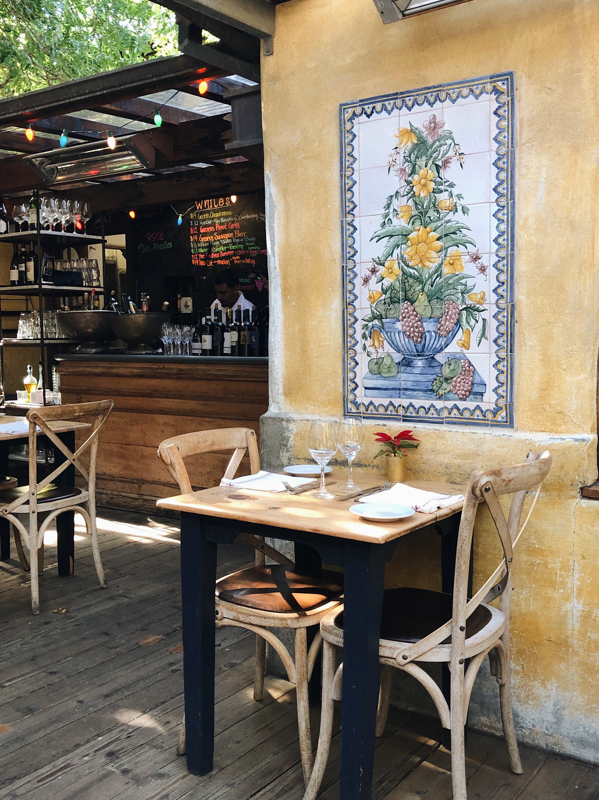
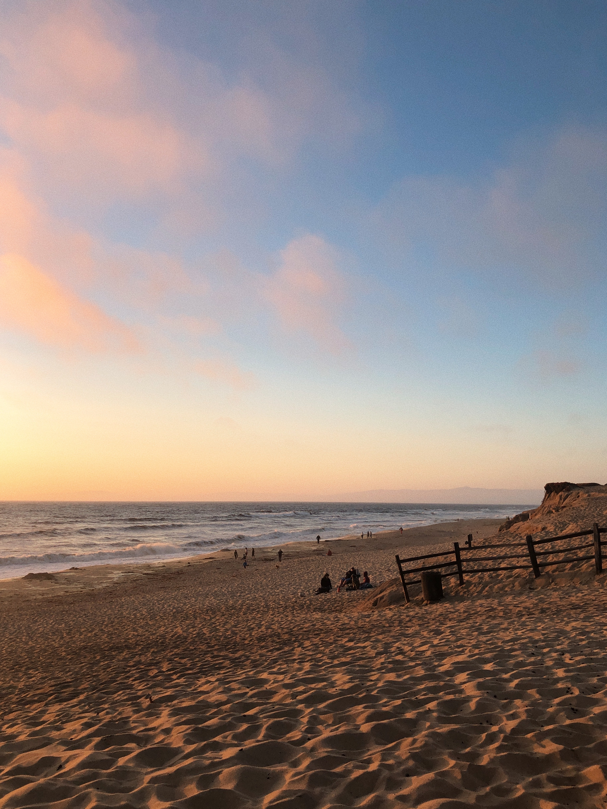
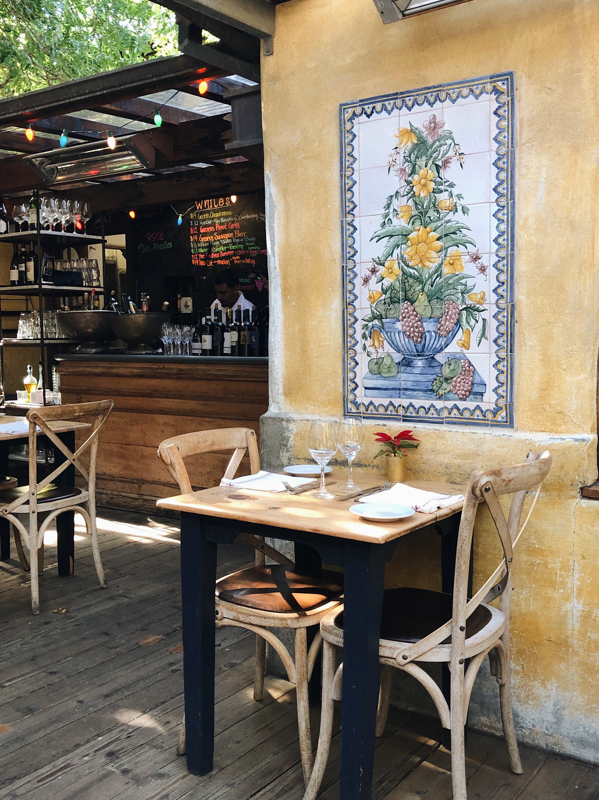
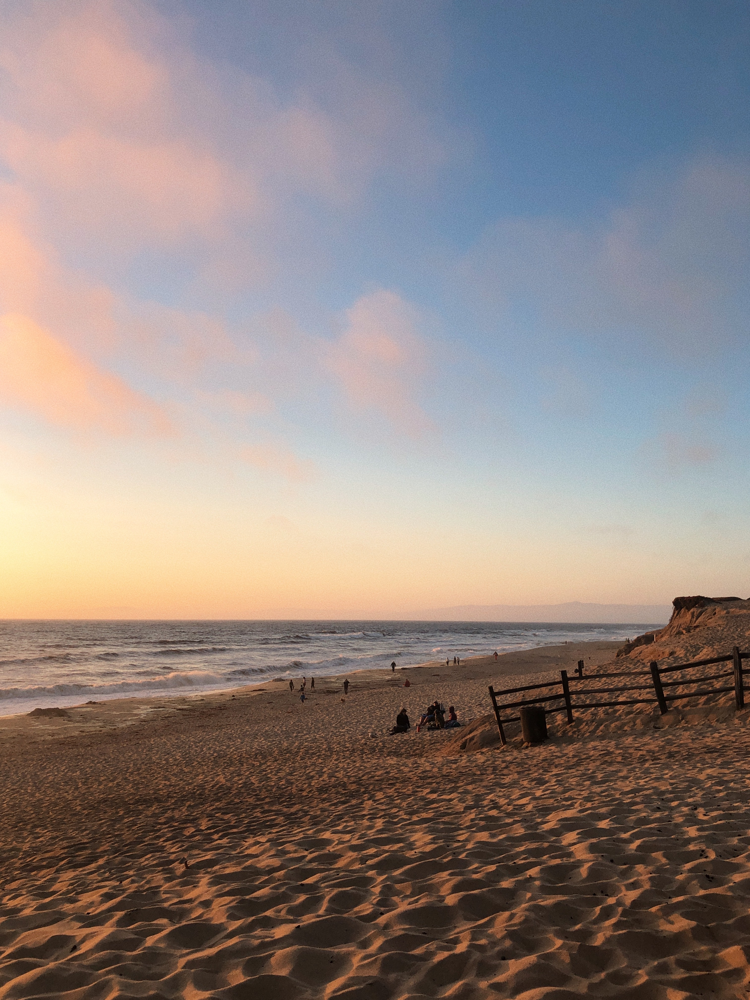
Overnight Stays
San Luis Obispo (SLO), Yosemite, and Lake Tahoe are locations worth staying for a few days, perfect for a long weekend! San Luis Obispo is a Spanish town with unique architecture, vineyards, and butterfly groves. My favorite pit stops are Slodoco donut shop, Avila and Butterfly Beach, and the evening farmer's market. In my experience, the best way to experience Yosemite National Park is by hikin, ideally in Fall or Spring. A few places not to miss: Bridalveil Falls, Half Dome, El Capitan, and Merced River Rafting. A crowd-favorite and popular spot year-round is Lake Tahoe, which is located between on the border of California and Nevada. Whether you prefer to go boating or skiing, Lake Tahoe is a place filled with adventure.
 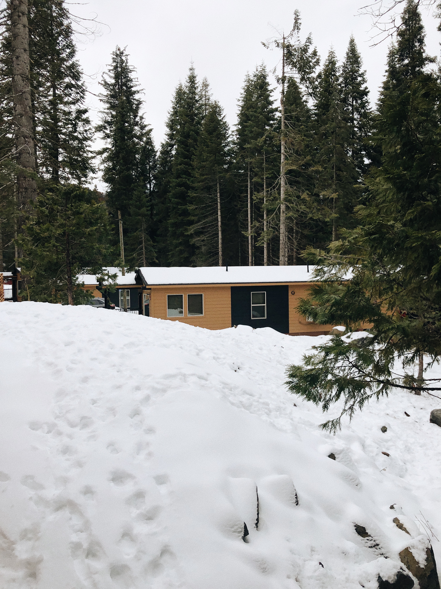
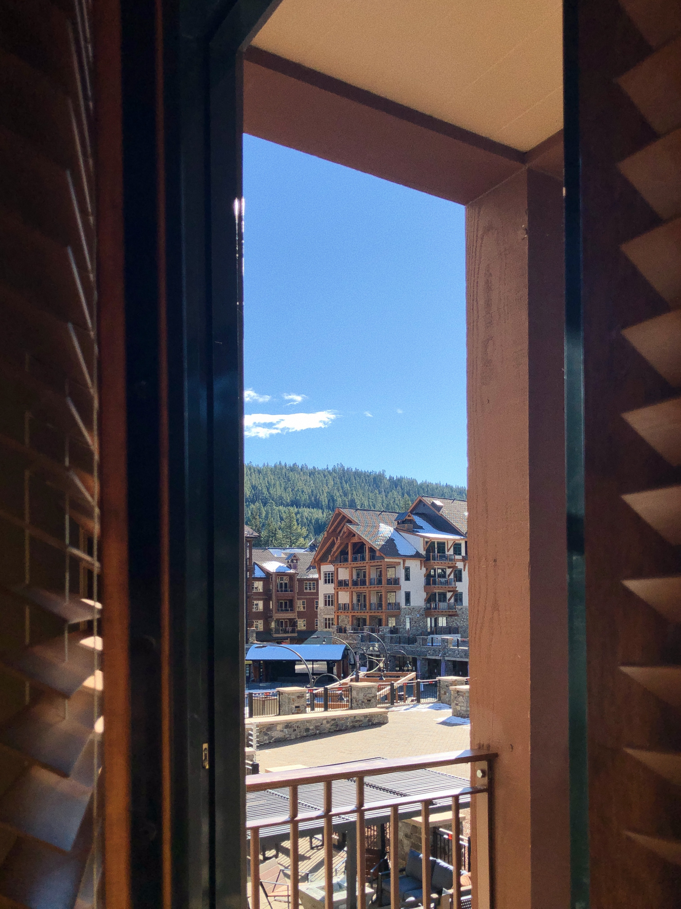
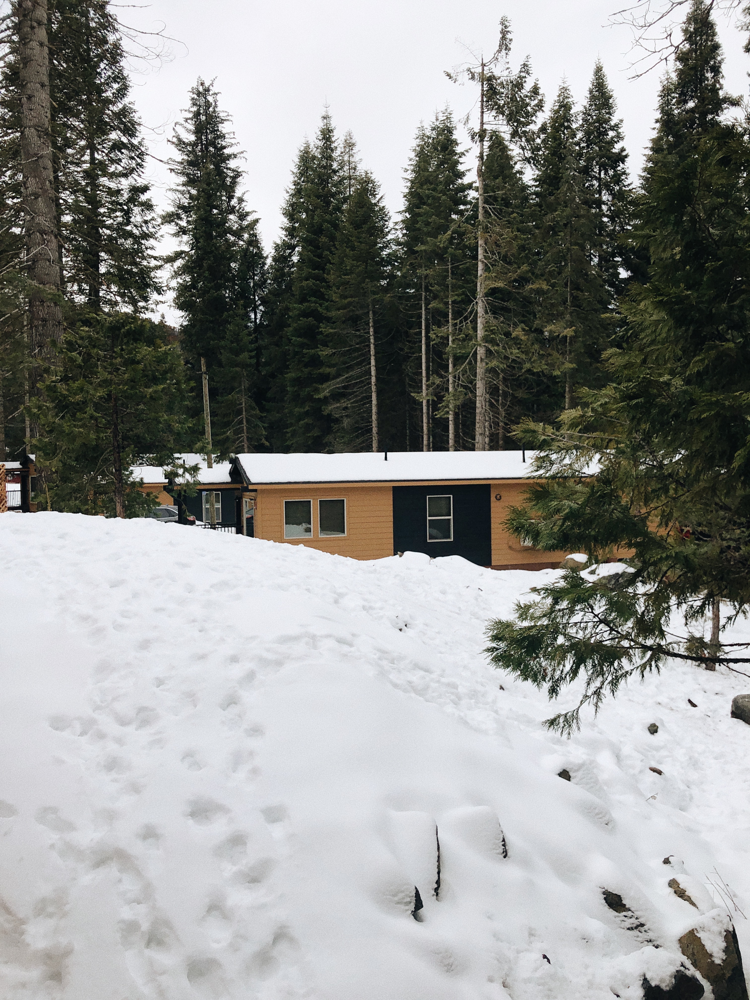
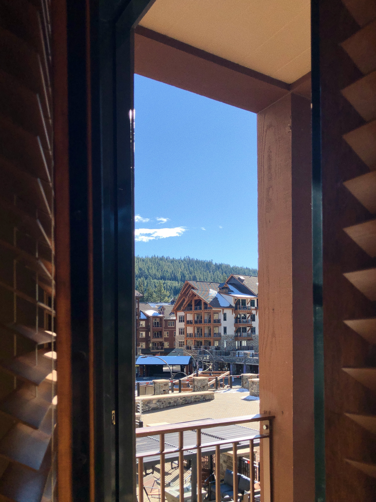